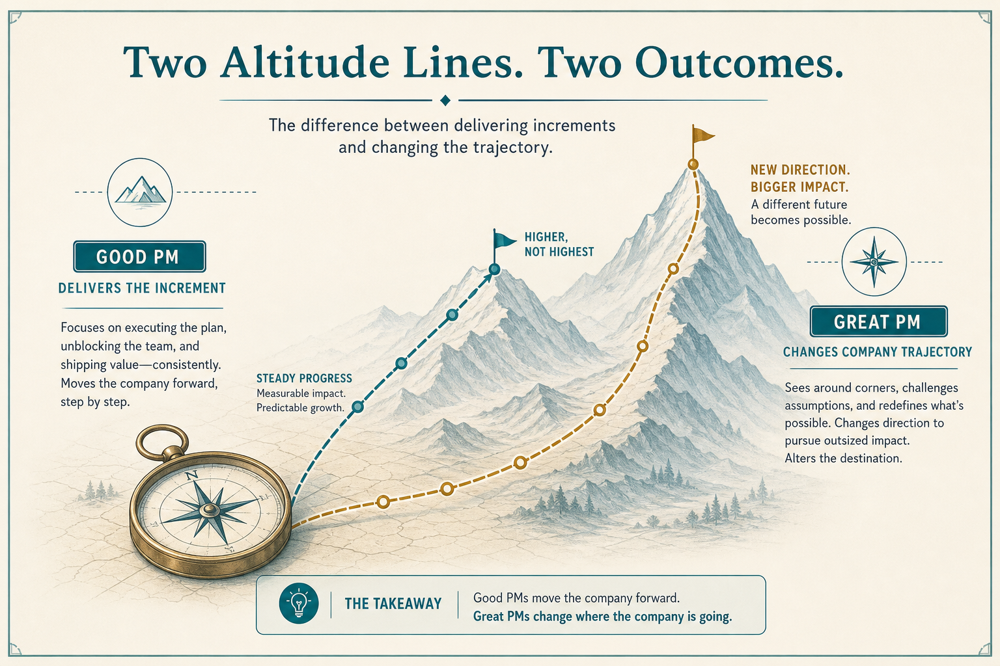

Good PMs deliver; great PMs change trajectory
Source: Shreyas Doshi (@shreyas)
original post
What it claims
Good deliver quality results; great change company trajectory. Metrics-informed not metrics-driven; research informs what to build; facilitate team-owned ideas; ask “What am I getting wrong?”; whole experience (docs/API/support) is the product; iterate PRDs so eng isn’t blocked; adaptive process per team; advocate infra; prevent some problems and ignore others; fix strategy before executing a bad one; team can describe the strategy; legal/security are advisors; principles are editable; these are signposts, not commandments.
Why it matters for a PO
Default PO is “good” (deliver the increment). Useful bar is trajectory and unblocked teams, without a new commandment deck.
3 takeaways
- Strategy before execution.
- Make pushback easy; keep docs unblocking.
- Treat principles and quarterly goals as editable.
Practice this week
Run one Good→Great shift for five days (e.g. “What am I getting wrong?”).